|
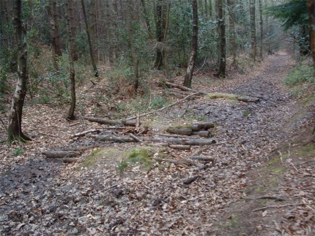 These are some jumps we built a long time ago. some of the first. with logs. 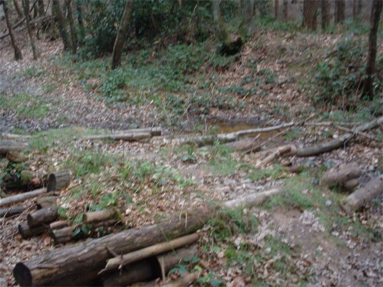 the fact that they are still here is cool but you would never want to ride them in a million years 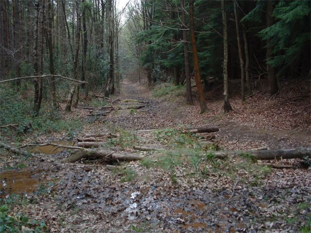 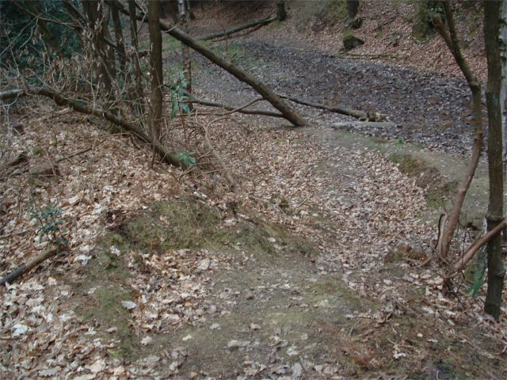 snaked berm run in. nuts/ 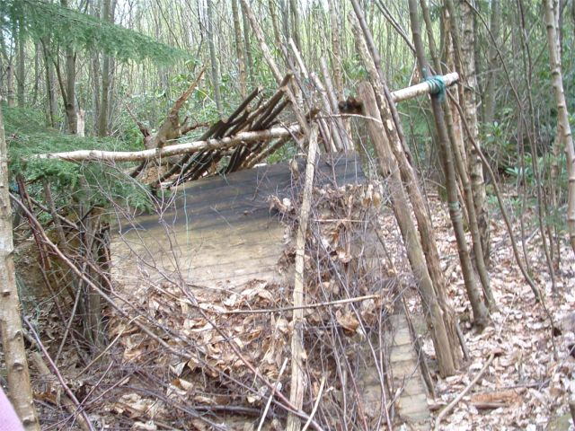 we found a creation of the scouts 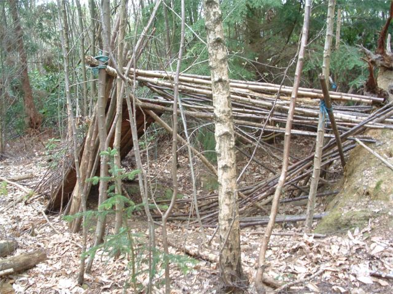 Then we found this. Some mountain bikers have been busy little bees. Good lads. 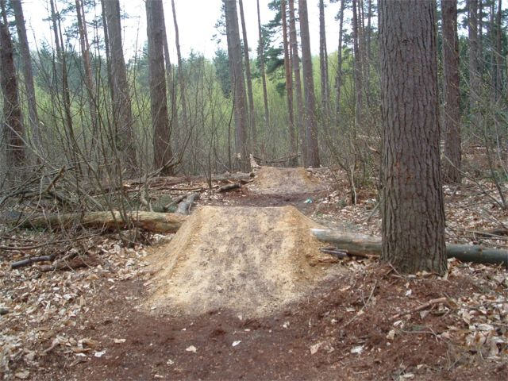 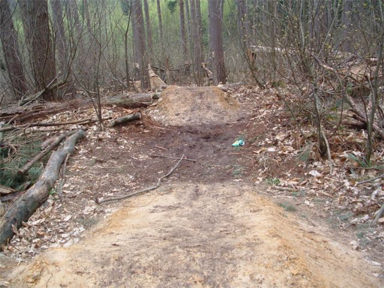 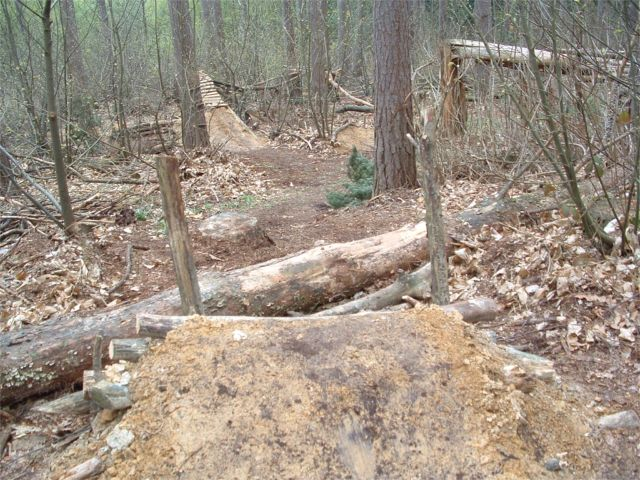 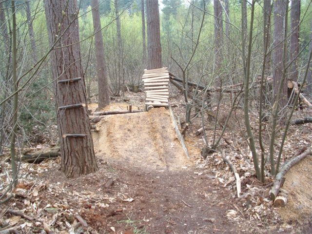 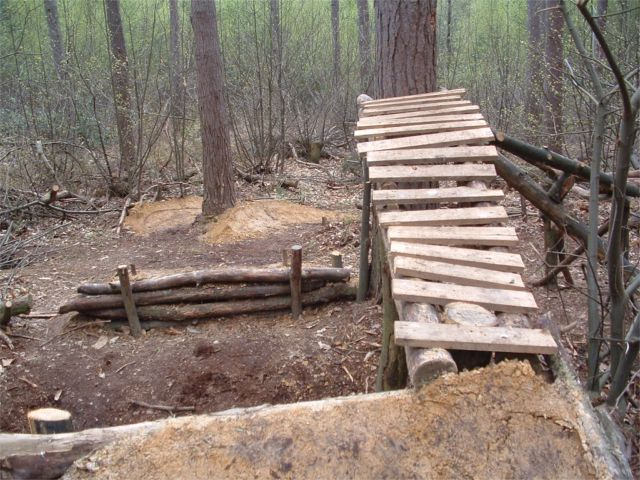 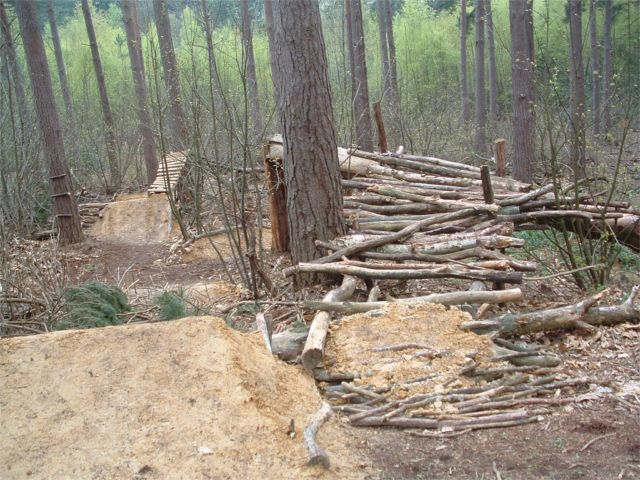 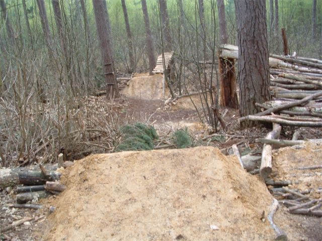 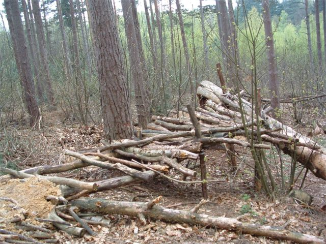 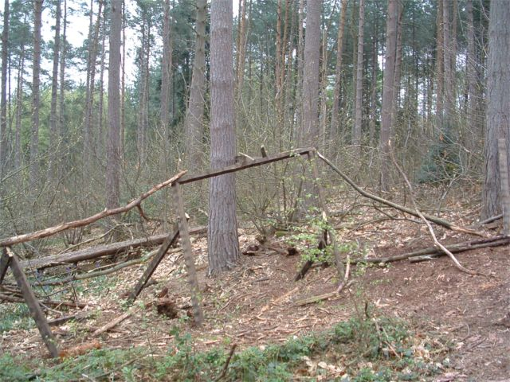 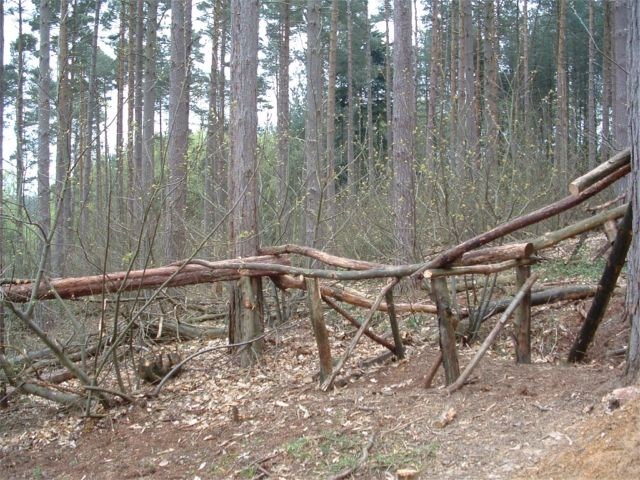 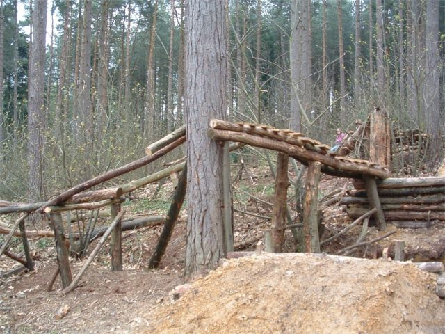 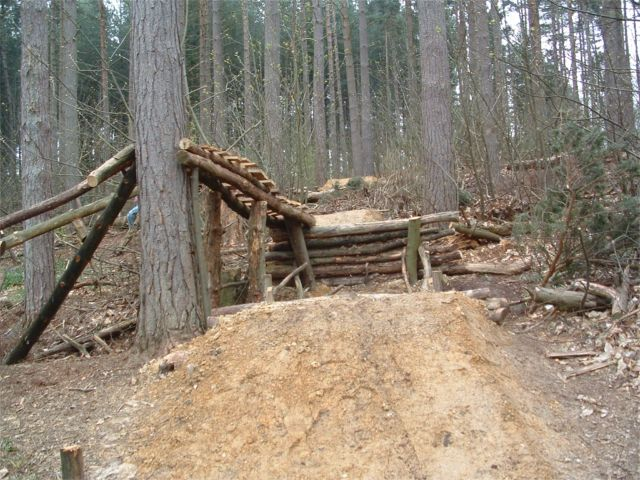 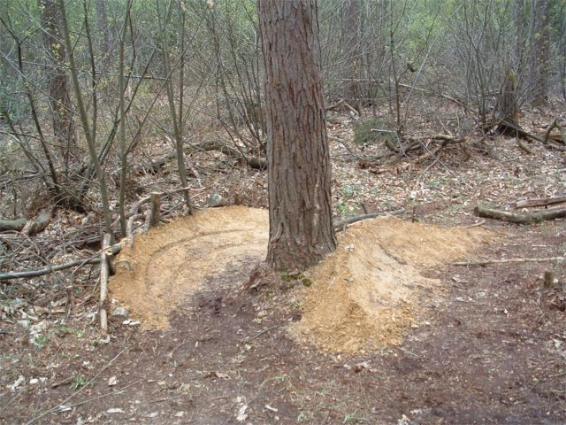 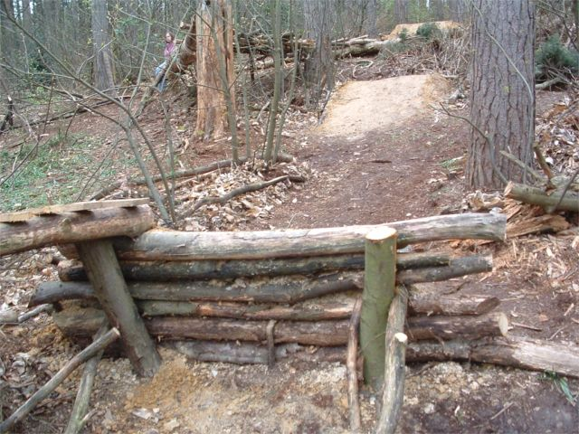 |